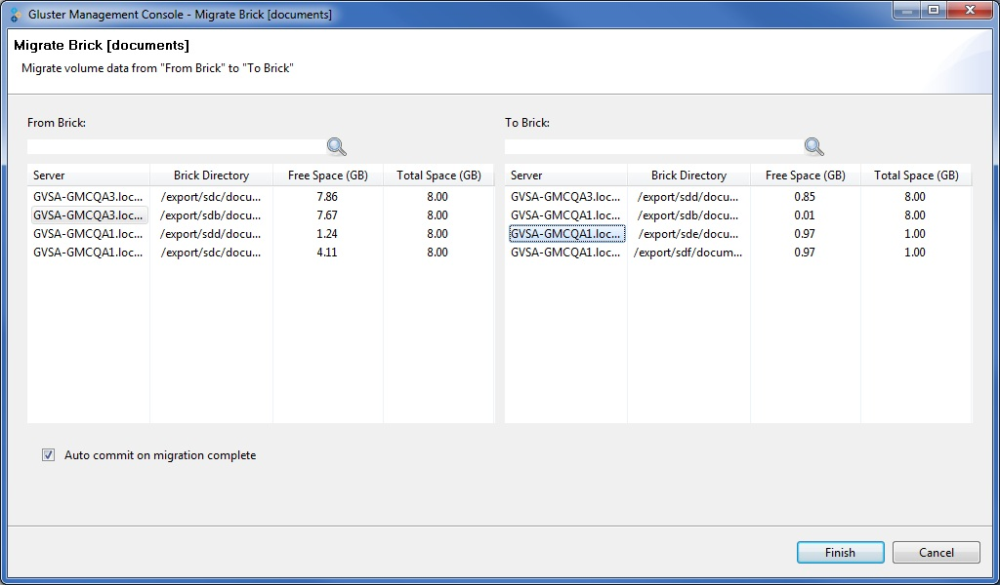
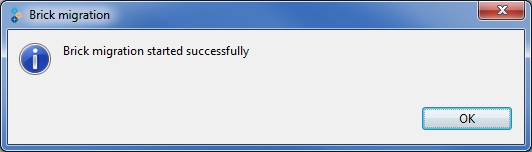

You can migrate the data from one brick to another, as needed, while the cluster is online and available. You can migrate bricks, that is, move data from one brick to another within your cluster. You might want to do this, for example, when upgrading a disk to another with a larger capacity.
When migrating a disk, the Gluster Management Console allows you to select both the source and destination bricks. After initiating a disk migration, the Task tab displays the status of the migration. You can stop, pause, resume, or commit the migration by selecting the appropriate icon from the toolbar.
To migrate volume data from one brick to another, perform the following steps.
The Migrate Brick window is displayed.

